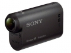

器材库 > 高清摄像机 > HDR-AS15

规格总览
发布日期
2012-10-01
HD
1080p
影像传感器
影像传感器
Exmor R CMOS
影像传感器数量
1
影像传感器尺寸
1/2.3英寸
总像素
1680万
有效像素（动态模式）
1190万
有效像素（静态模式）
200万
镜头和对焦
镜头
Carl Zeiss® Tessar® 镜头
光圈
f/2.8
拍摄性能
录制格式-视频
MPEG4-AVC/H.264
录制格式-静态图像
JPEG
视频尺寸
1920×1080/60P(PS)*1 ,1920×1080/30P(HQ),1280×720/30P(STD,SLOW,SSLOW),640×480/30P(VGA)
视频记录速率
30p, 60p
静态图像尺寸
(1920x1080
存储规格
存储卡
MS/MS PRO记忆棒, microSDHC, microSDXC
机身规格
颜色
黑色
尺寸
24.5 x 47.0 x 82.0mm
重量
65g
该产品暂无存档的网友点评
产品图 / 样片
评测 / 相关文章
该产品暂无存档的评测文章